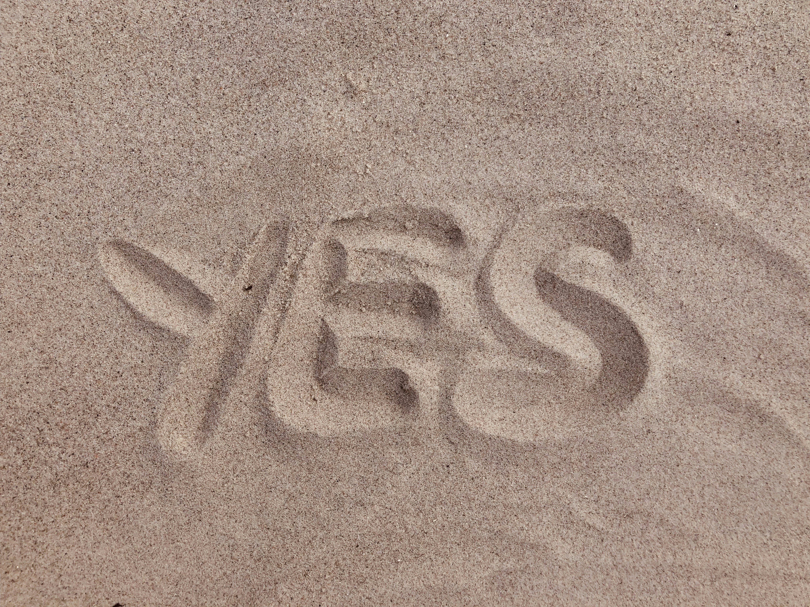

My Chess Journey
Chess has been a passion of mine for many years. The strategic depth and intellectual challenge make it one of the most fascinating games ever created. From the opening moves to the endgame tactics, every match is a unique battle of minds.
Brief History of Chess
Chess originated in India around the 6th century AD and has evolved over centuries to become the game we know today. The modern rules were standardized in the 19th century, and the game has since become a globally recognized sport with millions of players worldwide.
Magnus Carlsen - Chess Grandmaster
Magnus Carlsen is widely regarded as one of the greatest chess players of all time. Born in Norway in 1990, he became a grandmaster at the age of 13 and has dominated the chess world for over a decade.
With his intuitive play style and incredible memory, Carlsen has revolutionized modern chess. His ability to find winning positions in seemingly equal situations has earned him the nickname "The Mozart of Chess."
Achievements
- World Chess Champion (2013-present)
- Defeated Viswanathan Anand in 2013
- Defended title multiple times
- Highest rating of 2882 (2014)
- Rapid Chess World Champion
- Multiple titles since 2014
- Known for aggressive rapid play
- Blitz Chess World Champion
- Dominated blitz tournaments
- Exceptional time management skills

Strategic thinking in chess requires intense concentration
The battlefield of minds
Every move can change the course of the game
Watch Magnus in Action
Watch as Magnus Carlsen demonstrates his extraordinary chess skills and stuns the entire chess world with his brilliant play.
Chess Statistics
Explore interesting statistics about chess games and players from around the world. The visualization below shows data about chess grandmasters, openings, and game outcomes.
Play Chess
Ready to test your skills? Try our chess game where you can play against the computer!
Whether you're a beginner or an experienced player, our chess application offers a challenging and enjoyable experience. The game follows standard chess rules and provides a user-friendly interface.